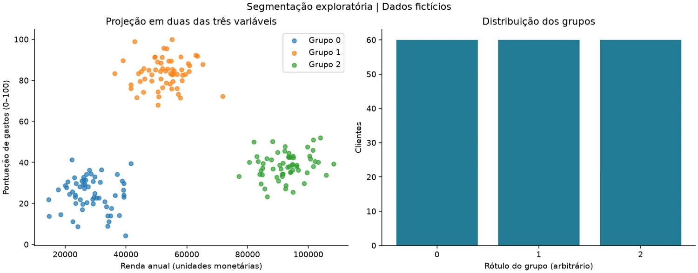
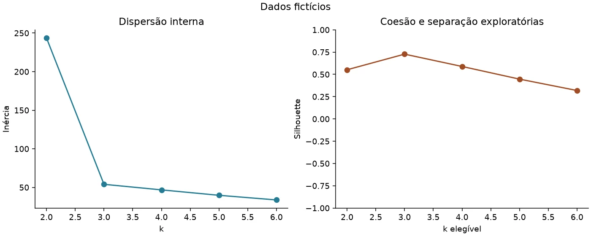
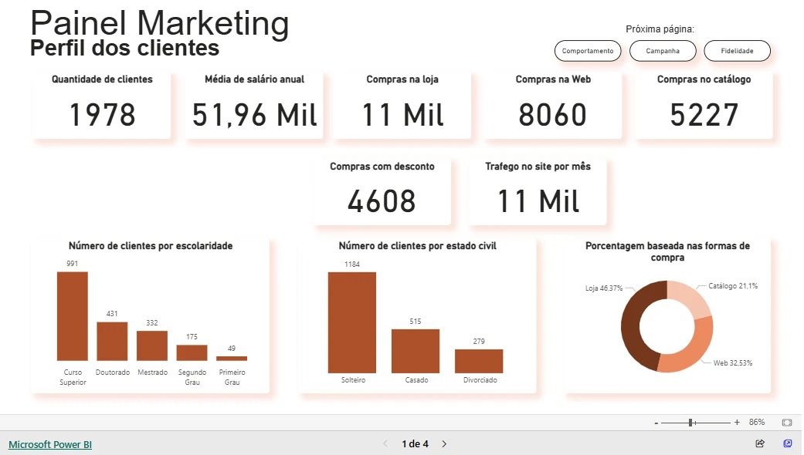

Ciência de Dados · Estudo
Segmentação de Clientes
Mais do que agrupar: explicar e avaliar os segmentos.
01 / Contexto
O cenário e o escopo.
Estudo de aprendizado não supervisionado, evoluído de um notebook em PDF para uma implementação executável. O fluxo público usa clientes fictícios e preserva a distinção em relação ao painel histórico de marketing.
02 / Problema e objetivo
O que precisava ser resolvido.
Um agrupamento só é útil quando as variáveis, o número de grupos e as limitações são explicados. Era necessário avaliar alternativas, reconciliar os perfis e tornar a análise reproduzível.
03 / Arquitetura e desenvolvimento
Da fonte à entrega.
- 01CSV fictício / autorizado
- 02Contrato + escala
- 03KMeans + avaliação
- 04Perfis + gráficos
Fluxo resumido para leitura. A documentação do repositório detalha contratos, fontes, etapas e reprodução.


04 / Desafios e decisões
Escolhas que sustentam a solução.
- StandardScaler com sementes e inicializações explícitas.
- Comparação de k de 2 a 6 com silhouette, inércia e tamanho dos grupos.
- Estabilidade entre sementes com ARI e sensibilidade ao RobustScaler.
- Notebook usa os mesmos módulos testados; gerações e hashes preservam a saída válida.
05 / Resultados e evidências
O que é possível verificar.
A demonstração de 180 clientes selecionou três grupos de 60 e silhouette de cerca de 0,727. Os componentes foram desenhados no gerador: esse resultado verifica o fluxo, sem descobrir segmentos naturais de clientes reais.
Evidência pública
Notebook, perfis, comparação de k e gráficos públicos; documentação registra 43 testes. CI da main consultado com sucesso em 21/10/2026.
Evidências consultadas em 21/10/2026. Os testes do projeto não foram reexecutados durante a implementação deste site.

Ver apresentação visual do painel original

06 / Limitações
O alcance desta entrega.
É segmentação exploratória, não modelo supervisionado ou implantado em produção. Pontuação artificial de gastos não mede fidelidade, frequência ou conversão. Aplicações de campanhas são hipóteses.
Vamos conversar
Um próximo desafio
com dados e negócio.
Busco oportunidades como Analista de Dados, Analista de BI ou Cientista de Dados, além de funções híbridas entre essas áreas.